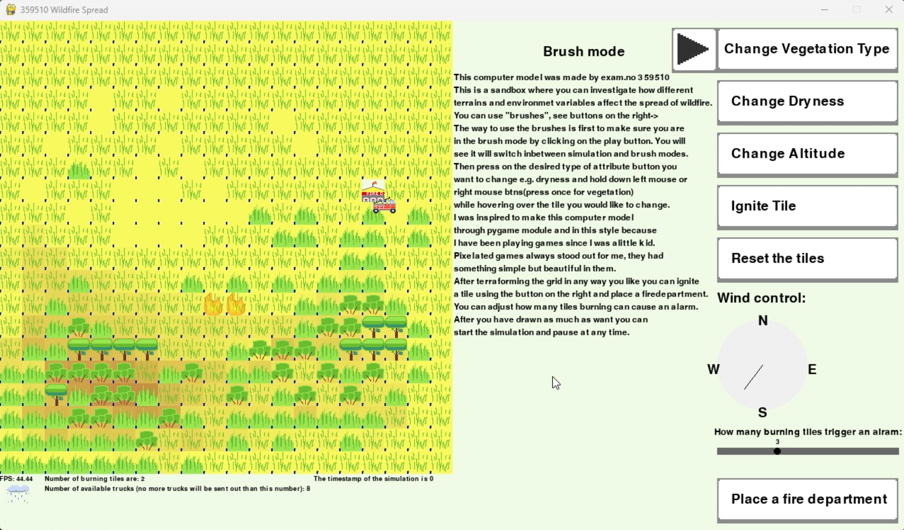
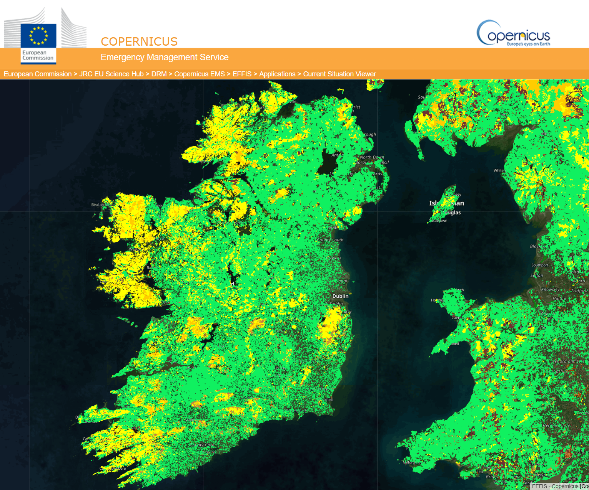
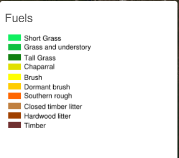
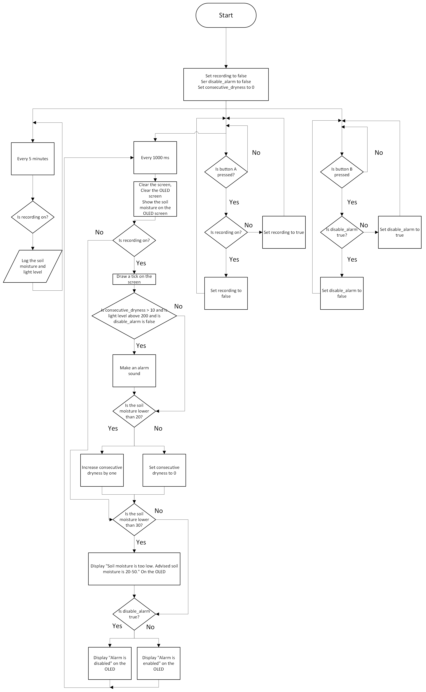

Meeting the brief
Embedded system:
The embedded system logs data from soil moisture sensor and light sensor. You can press button A to start and stop logging and you can press button B to disable and enable the alarm. The alarm is triggered when there are 24hrs of consecutive low soil moisture (10 seconds for demonstration purposes) and high light levels. Additionally the embedded system dispays advice on OLED according to the soil moisture.
Model:
Please download pygame, matplotlib and numpy libraries on your machine before running main.py - my model. Here is a screenshot from my model, you can terraform the model any way you like so you could try something like this.
Investigation
For my embedded system I wanted it to link in with the advanced part so I started to investigate what information on the forests can be useful for simulations. After looking at multiple websites, I have decided to do something related to wildfires for my embedded and advanced part of the project - disaster risk modelling, what if simulations and adaptive system.
I have looked at multiple websites and researches done on wildfires. I have looked at how people approach preventing wildfires and what environmental factors influence the probability of a wildfire. In an article1 that I found it suggests that 80-90% of wildfires are caused by humans. There are many government services in different countries that work on preventing and controlling wildfire and the damage they cause. One of those departments in eu is EFIS. You can see the current situation on wildfires in EU wildfires research centre. From these websites I have realised that there are many factors to how fast the wildfire spreads and what the probability of it starting is.
What are the factors involoved in the wildfire risk in an area?
-
What type of vegetation your area has:
- Type and dryness of grass
- Bushes
- Tree type
- Soil moisture and amount of solar radiation Additionally, fire spreads faster depending on some other environment data like, wind direction and terrain type. e.g. fire spreads faster uphill.


for example this is the current situation in ireland ↑
It is evident that there are a lot of grass vegetation and bushes in Ireland. There are forests in Wicklow and in the West regions of Ireland.
Even though there is plenty of precipitation and very little daylight it is important to take densly grown areas stated above in account as risk of wildfires in summer, when plants, soil and trees are drier.
To collect the environment data above I can use and environment microbit kit. Microbit is an opensource, reliable and cheap embedded system provided by my school to use. It is perfect for my project becasue there is a lot of documentation on microbit, it user friendly and easy to code using block programming.
Plan and Design
Stakeholder and Users
I hope the main users for my model and embedded system would be kids and students who would want to research wildfires and forests interactively. Other stakeholders for my embedded system and model could be local authorities that would be interested in using it to predict the future wildfire. In order for my users to be able to interact with my model easily it should have some sort of documention/explanation on how to use it - the brief. My model will have uniteractive visual interface. Kids and students should be able to clearly see the terrain and being able to easily interact with using prompts/buttons or other ui. I think I am going to try making buttons and sliders as a way to interact with the model. To reduce number of clicks and make it more accessible to change the model I will add rain button to quickly simulate a what if scenario.
Design Objectives
-
Basic requirements - Embedded system
My embedded system must have at least one digital and one analogue input. I thought that having just one analogue input like light levels is insufficient to make any predictions about wildfires. I have laid out some objectives to match the brief:
- Use the light sensor
- Use the soil moisture sensor
- Use the button a or b to start and end the data recording, thus being my digital input.
This way I will have enough digital and analogue inputs to match the brief and using both light and soil moisture sensor I can make predictions on the vegetations dryness which is on of the most crucial parts of a wildfire spread speed.
-
Advanced requirements - Python simulation & modelling
My Python simulation will simiulate wildfire spread speed and probability using agent based modelling. My objectives for this design are:
- Have tiles of ground as "agents" these agents will have their own attributes like moisture, temperature, vegetation type (grass, tall grass, bushes, trees), altitude.
- Have a visual interface to interact with the tiles (the collection of tiles will be called the grid). I will utilise pygame library to display, be able to click on the tiles and change the tile attributes using the buttons on the side. Being able to use a "brush" to change the grid.
- Being able to "ignite" certain tiles. The adjacent tiles will increase in temperature if the adjacent tiles are ignited. The rate of change of temperature is dependant on the properties of the tile. For example a grass would catch on fire quicker than a tree.
- My simulation should be able to record the number of ticks it took for the wild fire to burn through the grid or to settle down. My simulation will raise patterns and show for example that a more wet grid would be slower to catch on fire or not burn down at all.
- As part of the system requirements I have to use some data from the embedded system. The data gathered by the microbit is saved in a csv file on the microbit. I plan to manually copy the values from the ground gathered by microbit and put those values in the EMBEDDED_SYSTEM_DATA constant.
- Also to satisfy the adaptive system requirements I would have the ability to trigger emergency. My model would send the fire trucks from the fire departments and water the adjacent tiles to prevent spread of wildfire. I would have a slider or an input field to adjust number of burning tiles required to trigger an alarm. My embedded system would beep every second if the soil moisture is too low.
The aims above are related to Disaster Risk modelling and What If simulations.
My Other Ideas
My other ideas were to write a simple program that would run through a csv file to predict how dangerous an area is against a wildfire risk. It would use the light and soil moisture from the csv file and use an exponential curve to predict wildfire risk. The lower the soil moisture the higher the chance the plants are dead therefore the wildfire risk goes up.
Here is my models's flowchart
 And Here is my embedded system flowchart:
And Here is my embedded system flowchart:

Create
Disclaimer:
I used Aseprite for my sprites. All of my sprites are made by me.
There is more information on pygame in references 7-8.
-
The milestones that I went through to make my model and the embedded system,
- I started out with the model because I was more intrigued to make it than the embedded system.
-
First, I tried displaying just the grid with tiles.
I first looked at a couple of simple projects, examples of how to create a window with pygame and how to display an image - Ref 9-11.
I started by initializing pygame, creating a screen, setting dimensions, a title, and setting a clock for refreshing the window.
I created the grid class and the tile class to allow creating and manipulating the tiles and the grid easier.
Basically, how I made it work is that the Grid class would have the_grid variable that would be a two dimensional array with Tiles instanses. In the draw method, each tiles' draw method would be called, being passed the position where that tile should draw its information on the screen. The tiles draw method then would proceed to draw itself according to its attributes. I started with just one attribute - altitude. My idea was to make a gradient of a brown colour, like on maps, to display the altitude of the tiles. I didnt know how to do that, so I had to look at how other people get a gradient between two colours on stackoverflow, reference 12.
After displaying the grid with tiles, which were rectangles of some colour representing tiles' height, I added all the other attributes:- Vegetation type.
- Plants' dryness - a blue horizontal bar.
- Burning.
The problems I encountered:- I struggled to make a gradient of two colours.
- I had a tough time figuring out why the tiles are displayed in a weird way, as it turned out I messed up when I had forgot to multiply x and y by tile dimensions so the tiles were basically displayed at (0, 0), (0, 1), (0, 2) pixels instead of (0, 0*32), (0, 1*32), (0, 2*32).
- I implemented displaying buttons using the video below. I created a separate class that would handle buttons and wrote child classes that were more specific to different types of buttons like switching modes, switching simulation on and off, covered by the pause button, and sliders.
- To implement brushes, I needed not just the buttons but a class that would handle "global" variables, like what mode the brush is currently in, etc. I also knew that I will be writing a lot of text so I made a draw_text method to display text.
- To actually change the tiles when they are pressed on, I checked if the mouse button is pressed in the main loop, and if the mouse position is in the grid and then I would change that grids tile's attributes.
-
To add simulation part of the model I:
- Created a tick and update class in the tile class. Tick "predicts" the next values of the tile and update updates the tiles. More explanation on everything is in the comments in the code becuase I couldnt fit in everything in here.
- I drew fire trucks and departments, imported them, created send_trucks, move_trucks and draw_trucks in control class. I also drew the alarm and added it in the game using alarm method. - This is the adaptive system requirement.
- I added rain to create a what if scenario.
- After I finsished with the modelling part I made my microbit. I encountered no issues with making my microbit code except some technical issues unrelated to microbit itself but rather the coding environment. Some OLED extension didnt show up for me even though it installed with the microbit environment kit extension. I had to reinstall it manually.
This is a huge a project, so it will be hard for me to describe everything in detail:
Testing
As part of my testing I checked for different test case positions for tiles and got an error so I implemented a check key method in the grid class to avoid errors. Also as part of my testing procces I capped dryness at 1 and temperture at MAX TEMP constant.
Evaluation
I am partially satisfied with my embedded system and my model. The embedded system utilised minimal sensors and is not very multi-functional. I think my embedded system covers
all the requirements, but it is not very sofisticated. It uses a simple algorithm and could be improved by adding a more complex set of actions like displaying a variaty of advice
based on the soil moisture or having different beeps depending on the severity of the situation. Additionally, it would be good to be able to change the required time to trigger
an alarm using some kind of potentiometer or a slider. That would make it easier for a user to calibrate their embedded system the way they like.
The model also has flaws. My constants are not adjusted properly. If you ignite a very wet forest it will still burn down, just much slower, which doesnt really happen in real life. The results from the simulation
are not very accurate and are overexagguraing the fires strength.
Also, I think it was really stupid to put fire department and fire truck logic into the Control class, as all the direct tiles
changes should be done through grid class. This mistake doesnt affect the user in any way but to me its just bad coding and would
make it even hardert than it already is to understand the code.
Additionally, I would love to add more general buttons to my code to make it easier to change the grid quicker,
like the "Drought scenario" button, where all the tiles' moisture would be set to 0(this would be the opposite of the rain button).
It is ideal to decrease the number of clicks it is required for the user to achieve whatever they are trying to change in the grid.
My stakeholders and users would be kids and students; it is expected that children have a low attention span, so it only makes sense to make the program as user friendly as possible.
I also would love to import this program in a website in the future so that people could access this program more easily.
References
- https://www.scientificamerican.com/article/the-worst-wildfires-are-started-by-people-heres-how/
- https://joint-research-centre.ec.europa.eu/projects-and-activities/natural-and-man-made-hazards/fires/current-wildfire-situation-europe_en
- https://forest-fire.emergency.copernicus.eu/apps/fire.risk.viewer/
- https://forest-fire.emergency.copernicus.eu/
- https://thepihut.com/products/sparkfun-qwiic-soil-moisture-sensor - the image of the soil moisture sensor
- https://tempest.earth/resources/how-moist-should-soil-be/
- https://www.pygame.org/news
- https://www.pygame.org/docs/
- https://www.pygame.org/docs/tut/newbieguide.html
- https://www.youtube.com/watch?v=9uoXk8O18Mw - how to draw images
- https://www.youtube.com/watch?v=G8MYGDf_9ho - understanding mouse in pygame
- https://stackoverflow.com/questions/25668828/how-to-create-colour-gradient-in-python - understanding how to make a color gradient
Summary Word Count
Section
Word Count
Meeting the brief
110
Investigation
356
Plan and Design
699
Create
750
Evaluation
354
Total:
2269
| Section | Word Count |
|---|---|
| Meeting the brief | 110 |
| Investigation | 356 |
| Plan and Design | 699 |
| Create | 750 |
| Evaluation | 354 |
| Total: | 2269 |